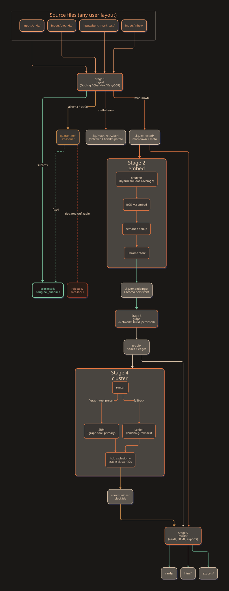
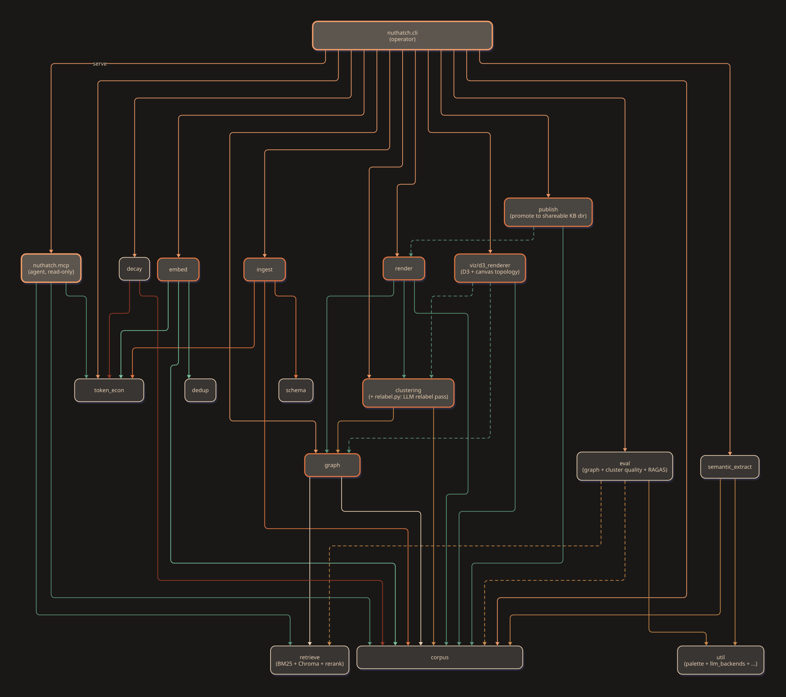

Two diagrams, pre-rendered by D2 v0.7.1. The same content rendered live by Mermaid lives in nuthatch_pipeline.html.
src/nuthatch/ and their import
dependencies. Click any diagram to open at native resolution.
Re-render with: scripts/ops/render_d2_diagrams.sh.
Palette: thermall power-station.
communities/ markdown pages, the cluster step writes
.kg/communities.json (per-doc community_id, nested
hierarchy, per-community core nodes, labels) and
.kg/community_centroids.npy (per-community mean
embedding). Both are read by the MCP server's community tools at
query time: community_id / community_path
/ community_label are emitted with every search hit,
and community_search(query, k) ranks communities
semantically against their centroids. See
Design_Decisions.md §
Community-aware retrieval for the full rationale.
| Hue | Hex | Used for |
|---|---|---|
| apricot | #ee9b69 | Inputs → Stage 1; CLI outgoing |
| rust | #e77843 | Stage 1 outgoing; stage-node borders |
| sage | #79c39e | Stage 2 outgoing; success outcome |
| cream | #ead1b5 | Stage 3 outgoing; body text; artifact borders |
| ochre | #c98a4a | Stage 4 outgoing; quarantine outcome |
| dim sage | #5a957a | Stage 5 outgoing; MCP read-side edges |
| brick | #9a3a25 | Rejected outcome; decay module outgoing |

nuthatch_data_lifecycle.d2.
nuthatch_module_graph.d2.